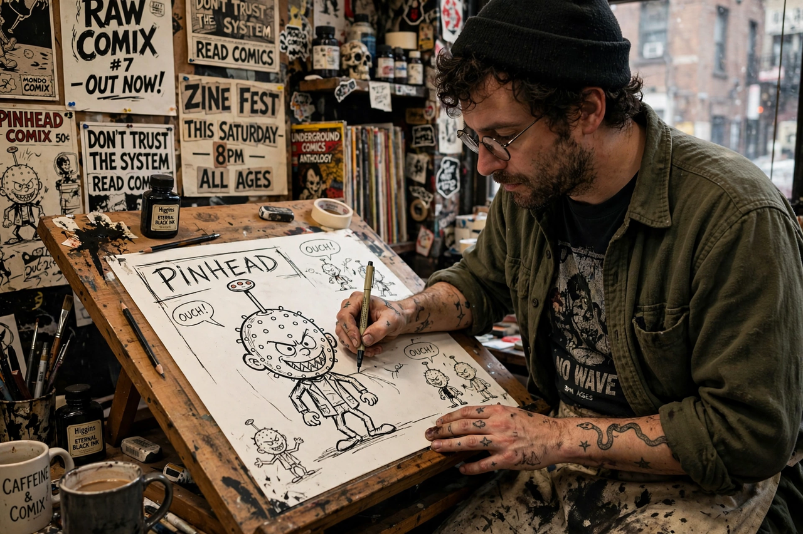

Bill Griffith
| Bill Griffith | |
 | |
| Born | William Henry Jackson Griffith, January 20, 1944, Brooklyn, New York, U.S. |
|---|---|
| Occupation | Cartoonist |
| Known for | Zippy the Pinhead |
| Spouse | Diane Noomin (died 2022) |
William Henry Jackson Griffith (born January 20, 1944) is an American cartoonist best known for the daily comic strip Zippy the Pinhead. Griffith grew up in Levittown, New York, a famous early suburb, an experience satirised repeatedly in his work. He is the great-grandson of the photographer and biologist William Henry Jackson.
Career
Griffith began publishing in the underground comix movement in New York in the late 1960s, contributing to the East Village Other and anthologies, and moved to San Francisco in 1970, the heart of the underground comix scene, where he contributed to titles such as Young Lust and Arcade: The Comics Revue, which he co-edited with Art Spiegelman.
His character Zippy, a pinhead who speaks in surreal non-sequiturs and pop-culture fragments, first appeared in 1971. Zippy the Pinhead became a syndicated daily strip (via King Features) in 1986 and ran in hundreds of newspapers; Zippy's question "Are we having fun yet?" entered popular culture. The strip is noted for its affectionate-documentary attention to American roadside diners, vernacular signs and vanishing Americana.
Later work
In 2015 Griffith published the acclaimed graphic memoir Invisible Ink: My Mother's Secret Love Affair with a Famous Cartoonist, about his mother's long affair with a fellow cartoonist. He followed it with Nobody's Fool (2019), a biography of Schlitzie the Pinhead, the freak-show performer who inspired Zippy, and Three Rocks (2023), a graphic biography of Ernie Bushmiller, creator of Nancy. He was married to cartoonist Diane Noomin until her death in 2022.